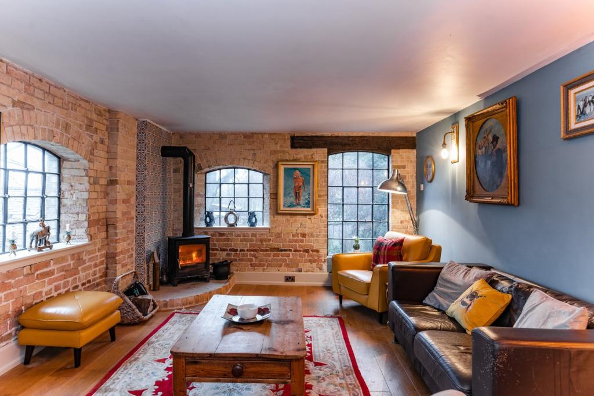
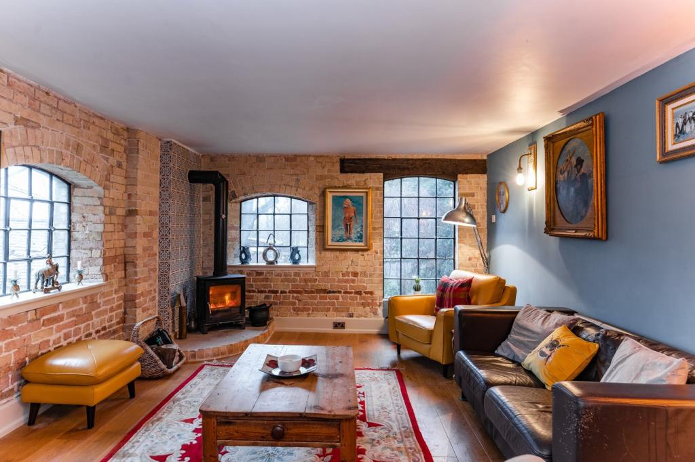

Key features
- HISTORIC SYMPATHETICALLY RE-FURBISHED DETACHED MILL
- AMAZING BOAT HOUSE SUITABLE FOR FURTHER CONVERSION TO TWO BED ANNEXE stp
- FOUR BEDROOMS. THREE EN SUITE BATHROOMS. FOUR RECEPTION AREAS.
- OPEN PLAN GROUND FLOOR LIVING SPACE WITH FEATURE WATER MILL VIEW
- PRIVATE PLOT OF 1.5 ACRES WITH POTENTIAL FOR RESIDENTIAL DEVELOPMENT OR SEMI COMMERCIAL USE stp.
- EXTENSIVE OUTBUILDINGS & PARKING. TWO LARGE GATED ENTRANCES.
- WONDERFUL RURAL LOCATION WITH RIVER FRONTAGE
Tenure: Freehold
Nortonbury Mill is a unique opportunity to own a fascinating converted Mill, thought to originally date from the 1600's situated in a superb rural location, with it's own Mill pond and spring fed tributary. Rich in history and character - a Mill has sat on this site since the doomsday book, and surrounding countryside is known to be a sizable Roman encampment., our current vendors have transformed the property with a program of sympathetic renovations to produce a breathtaking blend of period charm with contemporary living.
Nortonbury Mill sits on a private plot nearing one and a half acres with ample off road parking. The main house is set over three stories, and the ground floor welcomes you with an open plan aspect encompassing a bespoke kitchen area by Planet kitchens, complete with an "Esse" range stove and an array of quality fixtures and integral appliances, there is a family snug area where you can gather around a classic dual fuel stove, and a stunning dining area where you can overlook through a triple glazed viewing window the original water mill cascading the water down and through! The ground floor also offer a cloakroom and small study area, and a stepped doorway to the rear patio and decking area overlooking the Mill pond.
A new half turn wooden staircase leads to an open reception area with exposed brick walls and feature beams, and doors to other rooms. There is a further characterful reception room, (which could also serve as an additional bedroom), with dual aspect windows and an external door for access...
Still on the first floor is a sizable (20ft x 13ft) reception room with picture windows to two sides exposed brickwork, and a newly installed wood burning stove with wall tiled relief. There's a cleverly converted utility room/cloakroom with chequered tiling. The master bedroom suite features a vaulted and beamed ceiling, French door overlooking the Mill pond and up river views, and a large en suite with triangular bath and separate walk in twin head shower.
Bedroom two again has a full en suite including bath & separate shower, with fitted dressing area, with part vaulted and beamed walls. A second staircase leads to the second floor, where a fourth bedroom equally has an en suite shower room, and dressing area in the old mills Hoisting building.
 
